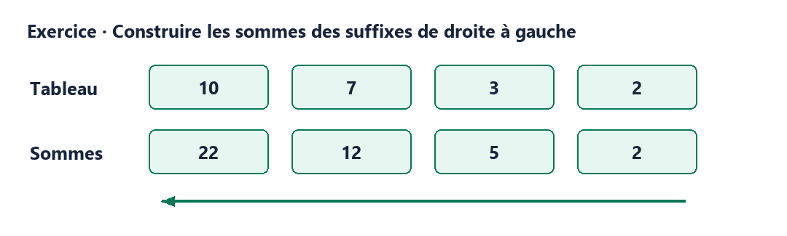

Comprendre le cours
1. Décrire précisément ce que fait l’algorithme
Une spécification indique quelles entrées sont acceptées et ce que le résultat doit satisfaire. Une précondition s’applique avant l’exécution. Une postcondition s’applique à la sortie. Pour le produit du tableau dans ton exercice, on suppose que le tableau est non vide et on veut retrouver le produit sans modifier le tableau.
Pour expliquer une boucle, écris l’état des variables juste avant ou après chaque passage, en gardant le même emplacement pendant toute la preuve. Un invariant est une propriété vraie à cet endroit à chaque passage. Montre qu’elle est vraie la première fois, qu’un passage la conserve et qu’elle implique la réponse à la fin.
2. Compter les opérations utiles
Choisis ce que tu comptes avant de donner une formule. Pour une somme ou un produit de tableau, tu peux d’abord compter les additions ou les multiplications. Le TD peut demander un modèle plus détaillé avec lectures, tests et affectations. Une opération répétée un nombre fixe de fois sur chaque élément donne un coût linéaire. Des boucles imbriquées demandent de lire soigneusement leurs bornes.
O(g(n)) donne une borne supérieure à un facteur constant près pour les tailles assez grandes. Θ(g(n)) compare la croissance par le haut et par le bas. Si le programme peut sortir tôt, indique si tu comptes le meilleur cas, le pire cas ou un autre cas précisément défini.
3. Faire un appel récursif qui termine
Une fonction est récursive si elle s’appelle sur une instance du problème. Il faut un cas d’arrêt et une mesure qui diminue vers ce cas. Pour une fonction qui rappelle suite(n−2), les cas de base n=0 et n=1 arrêtent les deux parités. En preuve, suppose que l’appel plus petit renvoie sa bonne valeur, puis explique le calcul du retour courant.
Pour la complexité, compte le travail fait à un niveau et le nombre d’appels. Un seul appel de taille n−2 avec travail constant mène à un coût linéaire. Deux appels de taille environ n/2 avec un coût linéaire à chaque niveau conduisent, dans la récurrence du TD, à un ordre Θ(n log n).
4. Choisir pile, file ou arbre
Une pile retire le dernier ajouté. Une file retire le premier en attente. Pour déboguer, dessine toujours le côté où tu ajoutes et celui où tu retires. La consultation du sommet ou du début ne retire pas d’élément.
Un arbre a une racine, des nœuds et des feuilles qui n’ont pas d’enfant. Un sous-arbre contient un nœud et ses descendants. En parcours préfixe d’un arbre binaire, traite le nœud, puis le sous-arbre gauche, puis le droit. Ignore un enfant absent. En largeur, une file garde les nœuds découverts dont les enfants n’ont pas encore été visités.
Pourquoi initialiser un produit à 1 ?
Prends le tableau [3, 0, 5]. Avant le premier tour, aucun facteur n’a été lu. La valeur 1 permet d’ajouter le premier facteur par multiplication. Après un tour, le produit vaut 3. Après deux tours, il vaut 0 et le dernier facteur le laisse à 0.
L’invariant est une phrase vraie à chaque passage au même endroit du programme. Ici, juste avant l’indice i, le résultat contient le produit des i valeurs déjà lues. Essaie aussi [3, 5] : une initialisation à zéro donnerait à tort zéro dès le premier tour.
| Facteurs déjà lus | Aucun | 3 | 3, 0 | 3, 0, 5 |
|---|---|---|---|---|
| Produit | 1 | 3 | 0 | 0 |
Révisions 2024, ex. 1 · Calculer le produit avec un invariant
Du cours aux TD et TP
Questions TD & TP
Révisions 2024, ex. 1 · Calculer le produit avec un invariant
Énoncé. Calculer le produit des éléments d’un tableau non vide, annoncer un invariant de boucle et déterminer l’ordre de croissance.
- Initialise
p=1, car multiplier par 1 conserve un produit. Parcours les indices de 0 àn−1en exécutantp=p×tab[i]. - Juste avant le passage d’indice
i,pvaut le produit desipremières cases. Au départ il n’y a aucune case traitée. Un passage multiplie par la case suivante et conserve la propriété pour l’indice suivant. - Avec
[2,4,1,3], les valeurs successives sont1 → 2 → 8 → 8 → 24. Avec une multiplication par case, il y en a exactementn. Dans un modèle qui compte aussi lectures et affectations, le coût total resteΘ(n).
Révisions 2024, ex. 2 · Calculer les termes de la suite
Énoncé. Écrire une fonction récursive pour u₀=3, u₁=4, et uₙ₊₂=uₙ+5. Donner une récurrence de coût et son ordre.
- Pour 0 et 1, renvoie la donnée du sujet. Sinon, calcule
suite(n−2)+5. Pour n=4, la chaîne des appels est4 → 2 → 0et la chaîne des retours3 → 8 → 13. - Si
areprésente le travail fixe de chaque appel non terminal, poseC(n)=C(n−2)+a. Sur les entrées paires,C(2k)=C(0)+ka, par dépliage. Pour les impaires, le point d’arrêt devient 1. Dans les deux cas, le coût est linéaire.
Révisions 2024, ex. 4 · Tester les suffixes en temps linéaire
Énoncé. Vérifier que, pour chaque indice i, 4×tab[i] est au moins la somme des valeurs d’indice i à la fin. Étudier le pire cas du double parcours puis proposer une version linéaire.
- Le programme donné additionne
ncases pouri=0, puisn−1, jusqu’à 1. Dans le pire cas, il faitn(n+1)/2additions du calcul des sommes. C’est quadratique. - Lis maintenant le tableau en sens inverse. Maintiens la somme cumulée des éléments déjà parcourus, ajoute
tab[i], puis compare avec4×tab[i]. Tu calcules chaque suffixe avec une seule nouvelle addition. - Sur le tableau du sujet
[10,7,3,2], les sommes associées sont[22,12,5,2]. Sur[8,2,4,4,1], la somme à l’indice 1 vaut 11, alors que4×2=8. Le test doit retourner faux.

Révisions, ex. 2 et 3 · Lire les états et le parcours d’un arbre
Énoncé. Donner l’état final des deux algorithmes de pile et file. Pour l’arbre dessiné dans le sujet, donner l’ordre du parcours préfixe.
- Pour la pile, simule chaque opération. Après avoir empilé
14,52,11,4, tu retires 4. Le sommet lu vaut 11. Puis 9 est ajouté et retiré. État final, de la base au sommet,14,52,11. - Pour la file, après avoir enfilé les mêmes nombres, retire 14. La valeur de début lue vaut 52. Ajoute 9, puis retire 52. État final du premier au dernier,
11,4,9. - Sur l’arbre de la page 2, écris la racine 87, puis complète tout le sous-arbre gauche en recommençant la règle à chaque nœud. Tu obtiens
87,−5,2,22,4,52,43,23,−6,24,12,7,95,88,46,9,−4,103. Une vérification consiste à barrer chaque nœud au moment de l’afficher sur le dessin.